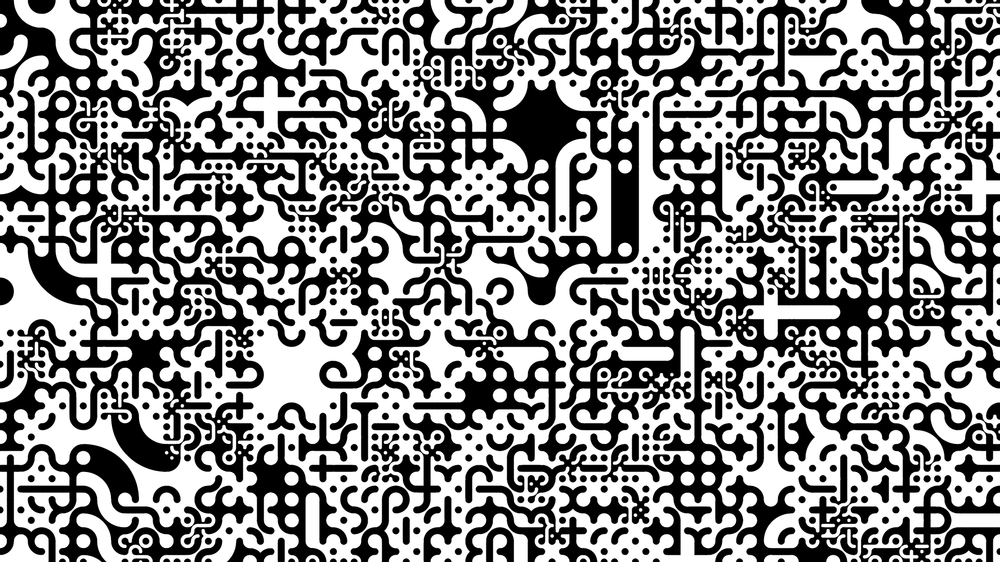

Truchet Patterns

Overview
This program procedurally generates Truchet Patterns. This is done by creating a bunch of tiles at different sizes and then rendering each tile as one of a select number of possible Truchet tile types. Each of these tile types interlocks seamlessly with every other type of tile regardless of size allowing for a continuous seamless pattern. To get tiles of different sizes an initial tile grid is generated and then tiles are randomly selected out of this grid to be split into 4 smaller tiles (similar to a quadtree).
Inspiration
This was heavily inspired by Christopher Carlson's Multi-Scale Truchet Patterns.